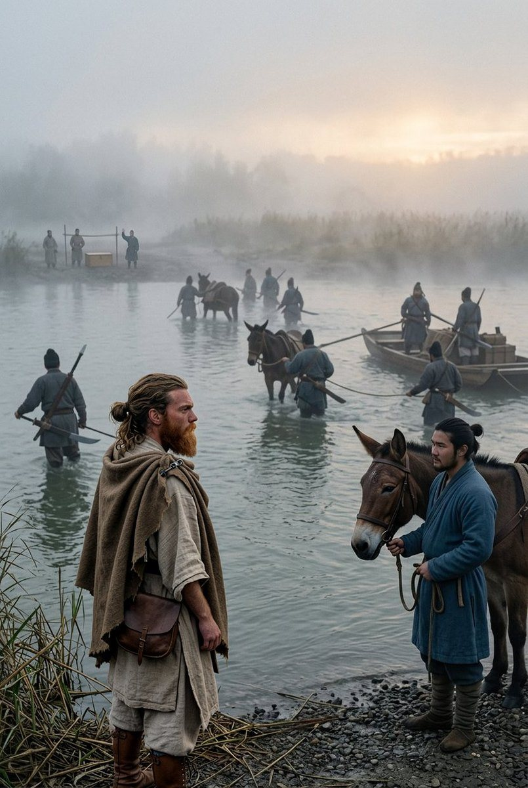
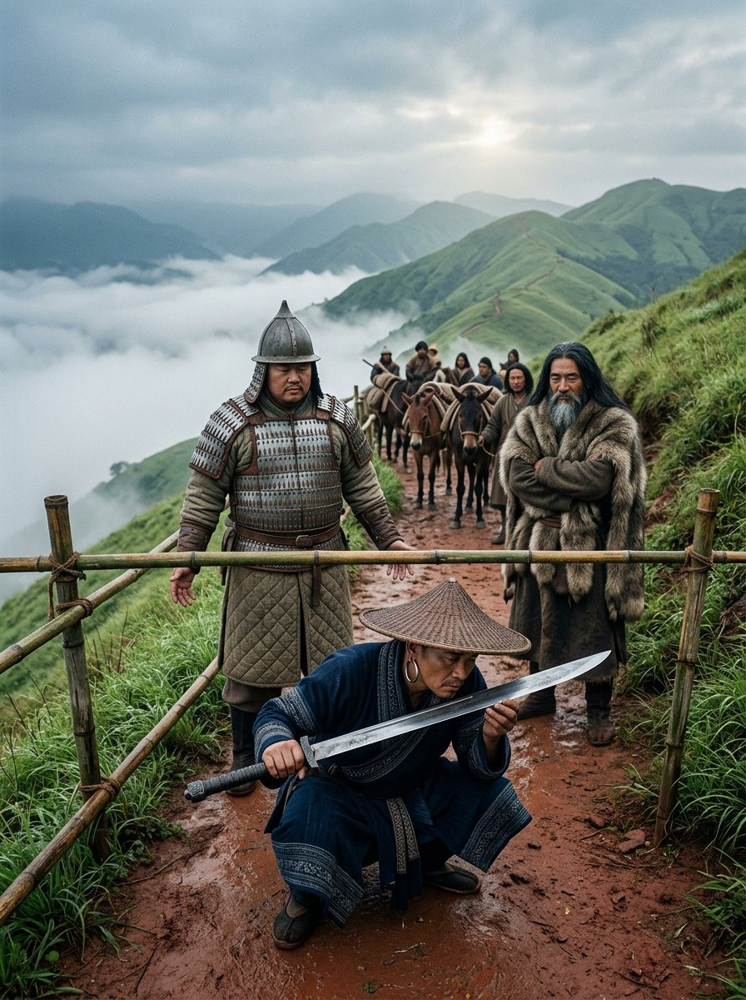
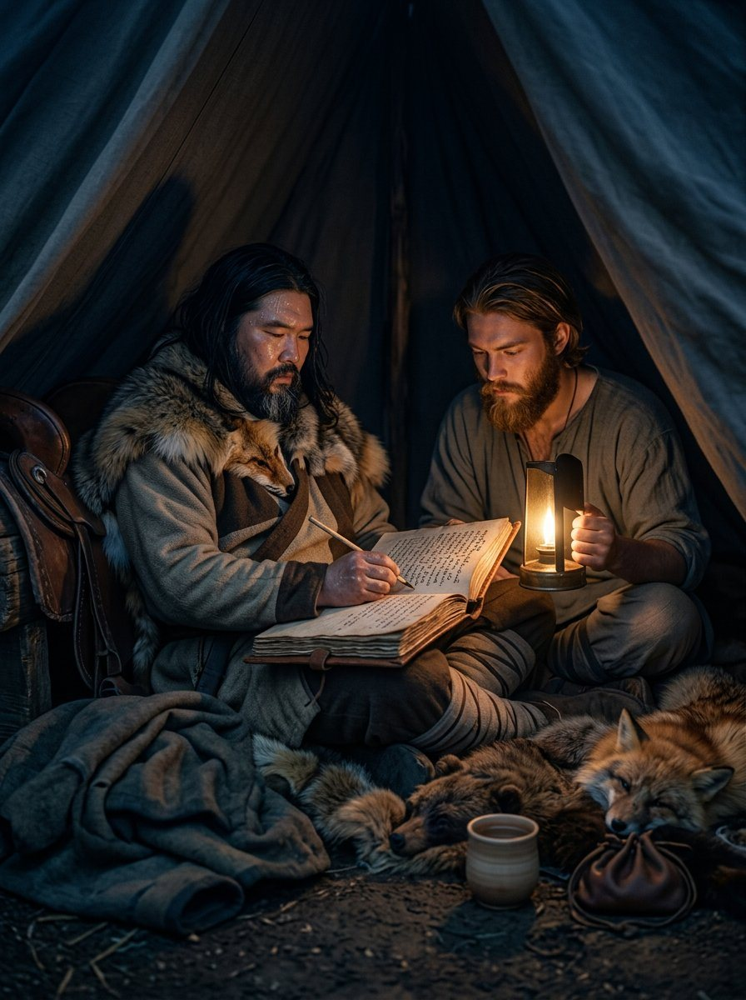
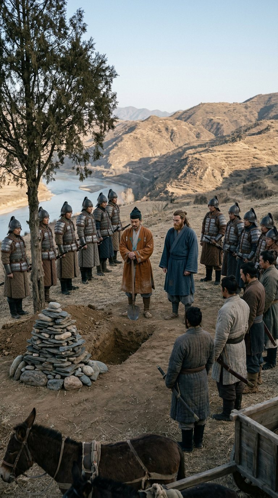
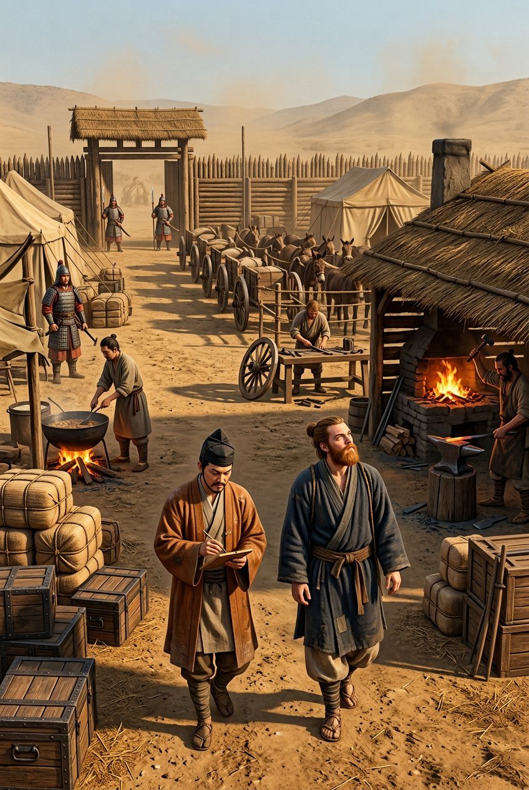

We left China in the fifth month, fourteen of us, and we crossed the frontier in the seventh with twenty-six. The arithmetic of that sentence is the whole of this section, and I will come to it in order.
The last thing we did on Chinese ground was not a contract, and it is the only piece of work in four years that I did not price. A steward came out to the camp before it was light and asked for the man who kept the ledger, and Edouinos went, and came back at midday with a horse and a written errand and a face I had seen twice before.
The man was Wei Zhao, who held the southern march, and whom the ledger calls only the Marquis, because that is what his steward called him and we never had the rank to call him anything else. He had held that march eleven years. He had one son.
The son was nineteen. In the fourth month he had ridden out with eight men after a thing he had no orders to ride after, and the wrong men had been on the other side of the water when he got there. The office would not pay to bring back a body that had no business being where it was. A father cannot send soldiers for it — that is a war, and the war would be reported — and a father cannot send a letter, because a letter is read by clerks before it is read by anybody else, and this one would be read by the clerks of his enemies.
What he could send was nobody. Men with no rank, no letters, no flag, and a reason to be crossing that water that had nothing to do with anybody's son.
That is what we were. We had a name at a canal head and in two river ports that no one in that province had heard of, one frontier document with a stamp on it, and a Greek who could talk to a hill chief about salt.
He offered us silver. Edouinos asked for men.
I have been in this trade twenty-one years and I have heard every arrangement a merchant can make with a lord, including several that would have hanged him. I had never heard a man ask for soldiers in place of coin. A cargo you spend. Silver you spend. Men spend for you, year after year, and are still there in the morning.
The Marquis thought about it for the length of a cup of wine, and said that he had twelve men he would be glad to be rid of and gladder to have back, and that we could have them.
The errand took eleven days and it was not difficult, which I record because it will sound as though it should have been. We crossed, we found the men who had stripped the body and buried it — they knew the place, they had put him under stones against the jackals — and we paid them for it. They wanted salt and iron and did not want silver, which I had seen once before, on a beach, from a boy with two hundred and six bars and no boat. Edouinos paid them in the things they wanted, at a rate they accepted, in a season when nobody had either, and they were civil about it, and one of them helped us carry the box down to the water without being asked.
The crossing itself was a ford, a ferry and a bribe, in that order, and I have crossed harder borders to buy a horse. What made it difficult was not the water. It was that we had to ask four men where the boy was buried, and every one of them had to be paid to be uncertain.

It was a box of camphor wood and it was heavier than I expected. That is the whole of what I will say about what was in it. The steward counted the box at the gate, not the contents, and signed, and gave us a receipt in a hand better than mine.
The Marquis did not open the box in front of us. He had the steward take it into the house, and he went in after it, and he was in there for a while, and then he came out into the yard and said the thing about the twelve. That is how I know he looked.
The twelve came to us three days later: heavy men with great sabres slung low, garrison troops out of a quiet march, who had been paid to stand at a wall and had not stood at a wall in years. The Marquis's own words were, take them, they eat.
We came out of China a caravan of fourteen and went into the hills a company of twenty-six, and nothing in the hills cared which we were.
I did not think about it that week. I have thought about it since: that the first body this company ever carried for money was a stranger's, and that the next one of ours to die would be left where he fell.
Nanzhao, and after it the hills
Nanzhao is not a country anybody crosses by accident. It is a kingdom the Tang court spent a hundred years failing to subdue, and it answers its own letters, and the first thing I noticed about it was that our frontier document was worth nothing there. Nobody asked for it. Nobody wanted to see it.
We had come four thousand miles with that paper and it had been the most valuable object in the company after the chest, and we walked out of China and it became waste paper in a morning. That is a kind of freedom you only get until somebody wants something.
The twelve were useful from the first week, and not for fighting. A soldier is a man who has been trained to be counted: he gets up when he is told, he stands in a line, he eats what is put in front of him and does not discuss it. A company on a road with no wall and no rank needs nothing more than that. I had spent twenty years making men behave like soldiers. Somebody had made these twelve already, and the difference showed in the feeding, which is where it always shows.
We were most of a year in that country and the hills after it, and I am not going to describe them, for the reason I gave about the steppe: a road is worth describing once in a life, and I have spent mine on them. What I will say is that the country is high, the tolls are frequent, and a cart cannot go where a mule can, so a company with a cart spends a great deal of its time deciding what to leave behind.
We sold the cart at the third toll, and the wheelwright wept about it, and he was right to. A company that goes by mule arrives with its goods and without its tools, and it took us two years and a great deal of money to be a company with a wheelwright again.
At one toll a chief's man wanted to see the sabres. He looked at them for a while, and then at us, and then waved us through without a fee, which is the only toll I have ever been paid to cross.

Samata
The bay at Samata is the first salt water since the Yangtze, and the first place since Parhae where a company is asked what it can do rather than where it is from. The delta ships the produce of three kingdoms under four flags, and a man who owns a warehouse there cares about one thing, which is whether the goods will still be his in the morning.
We took a guard contract for a rice merchant and did it well, and it led to a second, and the second was for a temple's cloth, and by the third the merchant had stopped explaining us to his own people. That is the only form of reputation I trust: not what a man says about you, but how tired he is of saying it.
The twelve stood at a warehouse door for two months and were not once required to do anything, and I paid them on the first of every month in front of everybody, because a soldier who is paid late starts thinking about what else he might be owed.
Samata is where I learned the difference between a guard and a soldier, and it is this: a guard is a man you pay to be seen, and a soldier is a man you pay to be counted. We had twelve of the second kind standing at a door in a country where nobody had ever seen either kind before, and they were worth the fee for the standing alone.
Up the Ganges
Pala is the richest country any of us had ever walked through. I want that in the book plainly, because I was not expecting it and because a man who has spent his life on roads that are mostly mud does not easily admit that a plain can be worth more than a sea.
The land is flat and wet and it feeds itself twice over. There is a river with boats on it in numbers I could not count, and roads between the towns that a cart can use, and a class of men who do nothing but move other men's goods and argue about the price. I have never been anywhere that needed us more and noticed us less.
In the first year we were asking for contracts. By the end of the next we were being written to, which is a different trade and a better one. A house with a name is cheaper than a loss: that is the whole of the argument a merchant makes to himself when he hires men he does not know, and it is the argument that was made to him in our favour by people we had never met.
I want that on the record, and I want the other half of it on the record too, because there is a way of writing about a reputation that makes it sound like a substitute for money. It is not. Prestige is what buys the next contract; the fee is what feeds the men while it is being performed. Ours were both, by the end, and I do not know a company in this trade that has had both at once for three years running.
One contract was a monastery's, and it was the only one I ever took where the goods were somebody's prayers and the danger was entirely men. They had been robbed twice in a year and had hired three companies, and the third one had also been robbed, which tells you what the first two were. They hired us because a scribe told them the name, and the name was written in their book wrong. They paid us anyway.
There was another company working that delta that year with a better name than ours and worse men: forty of them, two elephants, and no books. They took a contract we had wanted and lost it inside a season, and when their men came looking for work we took four of them and not the two who did the talking. A company is not its name. A company is who stays when the elephants have gone.
We worked that country for a year and more, and the company that came out of it was not the one that went in. The men were better. The camp was better: two tents then four, a forge, a wheelwright, a smith who could shoe a mule, a cook who could be trusted with a company's money. We were worth what we were paid by the end of it, and I had stopped being surprised by the size of the fees, which is the surest sign that you have been paid too little for too long.
The ninth month
The fever came up the river in the ninth month of 873, the way it does, in the towns first and then in the boats. It is a disease of crowds and of water and it does not care whose goods are in the hold.
Tsunenao said to get off the water. He said it in the ninth month and he said it again in the tenth, and both times I worked out what leaving would cost: two contracts unfinished, a bond forfeited, four houses in three towns that would not hire us again. A company that leaves a contract unfinished does not get another one, and I said so, and I was right, and I have been right about that in front of better men than me.
We left the river in the eleventh month.
We were nine days out when the first of ours coughed, and it was not a cough I did not know. I have heard it in four countries. It starts in the evening and it does not stop when the man lies down, and the man who has it says it is nothing, and drinks, and sleeps sitting up because lying flat is worse.
Tsunenao did not use the word for nine days. Then he said it, in his own language, and then he said it in Greek, which he had not done in six years, and which he did for the boy's benefit. Edouinos is twenty-three years old and understood the Greek perfectly and did not say anything at all.
We came off the low ground and up into the hills, which is the only thing anybody has ever been able to do about it: get out of the wet air and away from the wells. It worked for eleven of us. On the fourth day of the climb I coughed in the evening and tasted metal, and I sat down with the ledger on my knee and wrote the date, and the names of the towns behind us, and what we had been paid, and it took me two hours to write what I used to write in one.

The fever does not answer letters and it does not take a bribe. If we had left the river in the ninth month, we
The grave
My name is Tokifusa. I am forty years old, I have never written anything in my life except manifests, and this is a manifest.
He died on the eleventh day of the first month, in the hills above a river none of us could name, at a place where the road comes over a shoulder and there is one tree. It is not a good place. It is where the cart stopped.
I found the last page open in the book. He had got as far as a word and a half about the ninth month. I read it twice and then I closed the ledger and did not finish it for him, and that is the only decision I made that week which I am still sure of.
I dug for an hour before anybody thought to take the spade off me. The ground was shale and it took four men half a day, and the twelve carried stones up from the gully to put on it, because that is what their country does and nobody had told them that ours does something else.
We were boys on the same coast, six years apart, and I have known him since before either of us could shave. I am not going to write about that. He did not, and it was his book first.
I joined this company at Kushiro because he asked me, and a man who has known another man since they were boys does not need a reason that would stand up in a court. Five years I was his second. In all that time he never once asked me whether a thing was fair, only whether it would work, and I have never known a better way to be asked.
The Zhanmadao stood at the edge of it in a line. Twelve men who had served under him three years and could not say one word to him, and had asked me through the one who speaks a little of both languages whether they should stand at the grave or load the mules. I said stand. They stood for the whole of it and then they loaded the mules.

The chest was on the cart ten paces away. The man who keeps the lists stood at the head of the grave with his hands at his sides and did not open his mouth. Nobody read anything over him. Nobody said a name.
I want to be exact about that, because a reader will take it for coldness and it was not. There was nothing to read. The only rite this company has ever had belongs to one house, and it is a chest and a fire and a list, and he was of the shore and had never asked to be of the house. That is not the same as being refused. It is worse. It is having nothing to refuse.
Then Edouinos said the three words. Quietly, the way a man says them when he is counting, not the way a man says them at a grave. The Distinguished Host. And we answered to it, all of us, in that order, the way we answer when the pay is being counted out — and that was the funeral. I have been at a good many funerals and I have never been at one where the only thing said over the man was the name of a company, and I have thought since that it was the truest thing said that week.
We did not take him with us. A body is not cargo: it does not keep, and a company that carries one is not carrying anything else. He would have said the same and said it in six words.
I have his tally stick. It is worth nothing, it is notched with six years of oats and mules, and I have not used it and I will not.
We came down out of the hills in the second month and went west, and we were in Cedi by the middle of the third.
Shiina did not speak for four days. He is the one who talks; that is his use, and he had no use. On the fifth day he came to me and asked whether the mules had been counted, and I said they had, and he nodded and went to count them again, and I knew he was going to be all right, and I was right by about a year.
The camp at Cedi is a better thing than anything we had in China. There is a forge with a roof, a wheelwright, eleven carts, ninety-odd mules, four hundred men's worth of contracts behind us and the Zhanmadao standing at the gate because they like to. Twice this winter men have come to us instead of us going to them.

He would have liked it. He would have said so in one sentence and then gone to look at the food.
The dates in this book are the ledger's dates. He wrote that at the beginning of his own chapter and it was the first true thing in it. They are still the ledger's dates. I am the one writing them down now, and I write them the same way, because a man who alters another man's dates is not keeping a ledger. He is keeping a story.